In this part of the series, two categories of post-production effects, HDR and filters, will be explained.
HDR Defined
High Dynamic Range (HDR) imaging techniques are loosely based on the way the human eye dynamically adapts to the wide range of lighting conditions on Earth. Since the dynamic range (ability to see from darkest shadows to brightest highlights) of human vision far exceeds that of any current camera or monitor technology, digital imaging has an even more urgent need to dynamically adapt exposure as cameras move through bright and dark scenes.
The HDR tools in CRYENGINE allow lighting designers to use an enormous range of luminances in their levels, just as real-world lighting levels vary from direct sunlight to much less intense electric lights, moonlight, and even starlight. HDR dynamically evaluates the average luminance of the image in each frame as the camera moves and adjusts exposure accordingly. Overall exposure, highlight, midtone, and shadow tones as well as white point can also be fine tuned to suit your goals.
Without HDR's adaptive exposure, your entire game would be fixed at a single exposure setting, which would greatly limit the variation in light levels you'd be able to utilize, given the need to make levels navigable. For example, interior light levels would have to be vastly brighter to match or come close to the brightness of the sun.
While HDR ostensibly has the same goal as human vision, to normalize exposure (to even out dark and bright areas so lighting levels are consistent), that is not necessarily the most effective use of the tool. Fortunately, once you understand how the settings work, you can choose to configure them to achieve a broad range of looks rather than merely normalizing all scenes to the same exposure levels.
While this written tutorial doesn't elaborate on the details of how the human visual perceptual system works, if you're interested in understanding it better and how it creates unconscious expectations in your players by which they will evaluate your lighting, please see the video tutorial that corresponds to this page.
Gamut
You may have heard the word "gamut," which means the range of luminance that an imaging device can see or reproduce. So when we say something is "out of gamut," that means that it's brighter or darker than the device can see or reproduce.
And when something is out of gamut, all you see is pure white or pure black, which isn't very good for navigating in the real world or in a game. What HDR does in CRYENGINE is 1) make an overall compensation, and 2) adjust the lightest and darkest tones that are too close to being out of gamut for you to perceive detail and map them to tones where you can perceive detail.
Just to see why we need HDR in a game engine, this is what our little game world looks like without it:
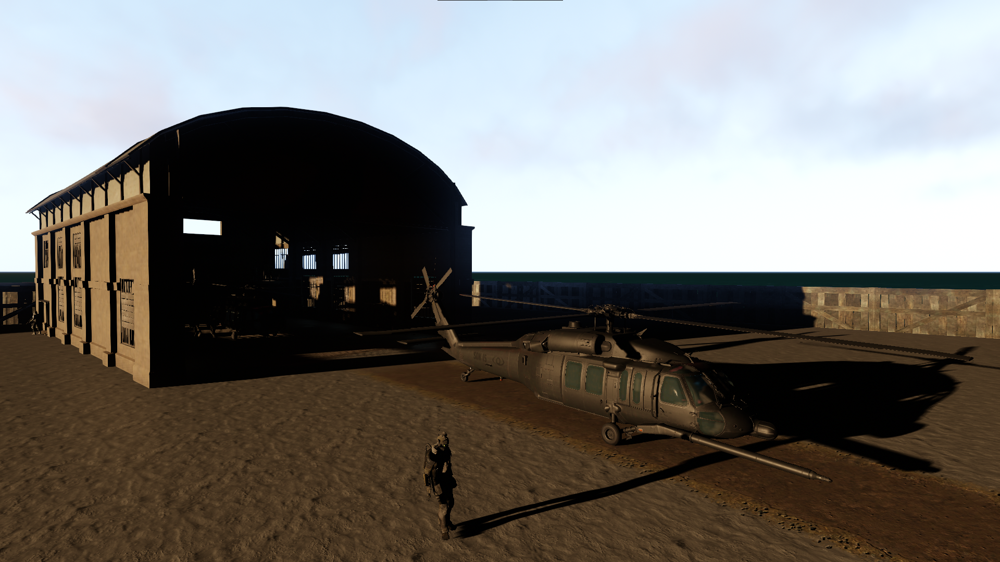
Scene with HDR and ambient light disabled
If you're familiar with lighting in CRYENGINE, you may recognize that this scene has no ambient light. Adding environment probes or SVOGI would remove the pure black shadows, lowering contrast dramatically and certainly improving navigability.
However, it would still leave another problem: lighting levels outdoors (lit by the sun) and indoors (with no light components in this example) differ so much that a fixed exposure cannot serve both situations. Either you'd have to overexpose the exterior in order to make the interior bright enough to see, or you'd have to expose for the exterior and let the interior remain too dark to navigate.
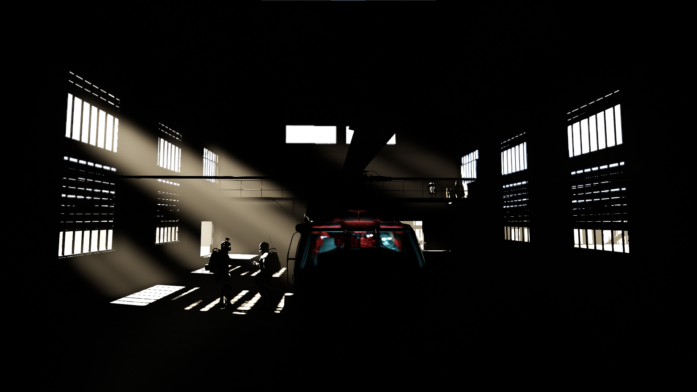
Inside without HDR or supplemental lighting
HDR addresses this problem by dynamically adjusting exposure levels as the camera moves between dark and bright situations.
If you look down at the ground where the sun is coming through the windows, the light looks perfectly normal, but the shadows are completely out of gamut, pure black. (Without skylight, bounce light, or light components, shadows remain black.)
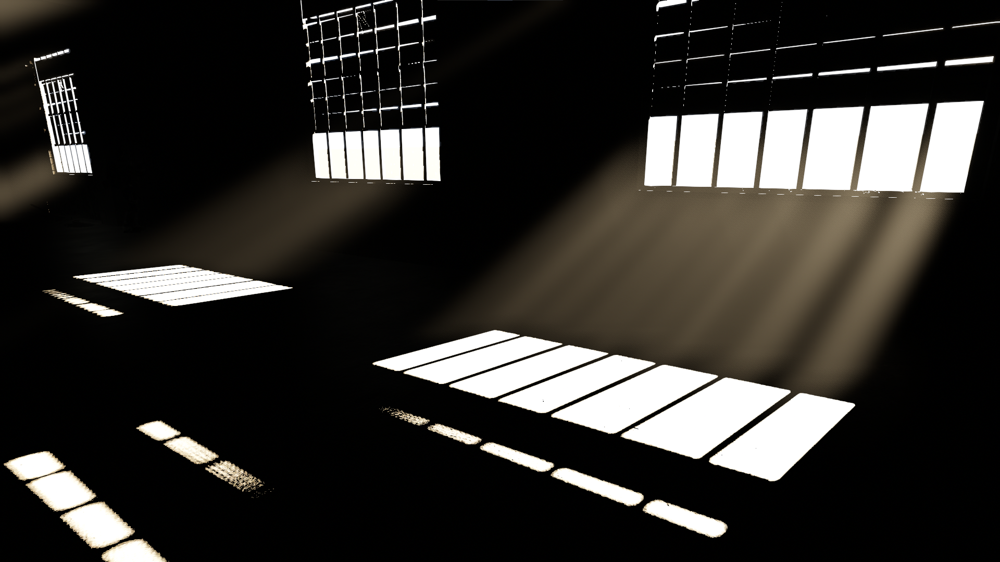
Sun coming through windows
There is a non-HDR "solution:" you could just put light components inside your buildings that are as bright as the sun, or you could reduce the intensity of the sun to match the brightness of your interior lighting. However, as you can see below, this looks wildly unnatural because it doesn't correspond to the world we're used to seeing, in which the sun is always far brighter than interior lights. We expect a difference in interior and exterior light levels.
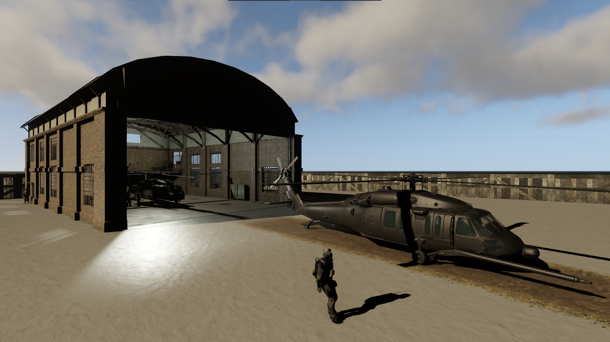 | 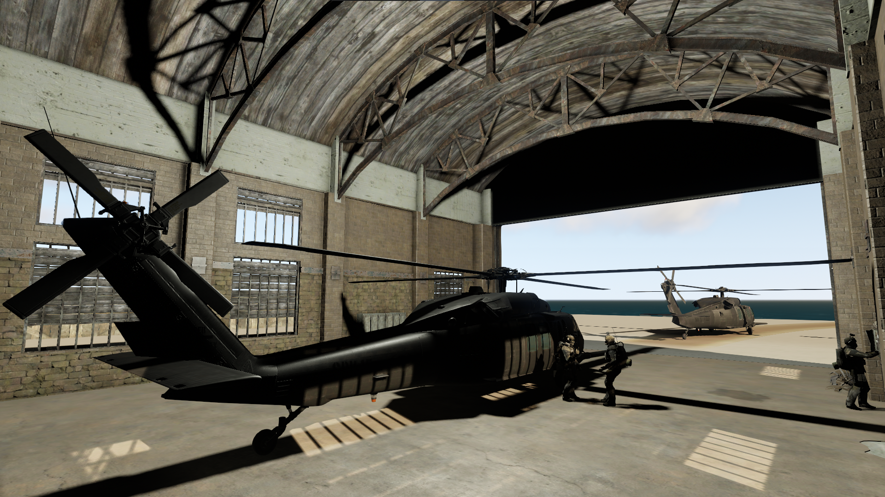 |
| Interior light as bright as the sun viewed from outside | Interior light as bright as the sun viewed from inside |
As much as there are no rules in game design, this sense of Earth-based lighting conditions will be the criteria by which players judge your scenes - unless your game takes a drastic enough departure from realistic lighting to make it obvious that realism is not what you're trying to simulate.
The example below uses light and HDR in a deliberately unrealistic way as a stylistic choice. If you move far enough from naturalism, players will accept your unnatural world as a creative choice. For example, when you crush the shadows to black so the player can't see clearly, it gets their attention. It's uncomfortable because you've taken away the control they're used to having and because real world experience has taught us that not seeing is dangerous. But it's a great way to build intriguing images, as long as the player feels it's fair and can still navigate. This example employs dramatic silhouettes, emissive fog, and no light sources whatsoever, neither sunlight, diffuse light, nor light components. You can download this environment preset from the Asset Database.
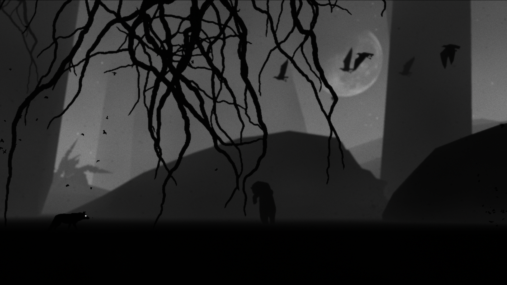
High-contrast, non-realistic imaging style
But if you do want to mimic realistic lighting conditions, it's best to set the brightness of the CRYENGINE sun and your light components similar to real-world values, and use HDR to adapt to the wide range of exposures, just like your eyes do.
Hopefully you now understand why HDR is needed, so let's see how to use the HDR features in the engine.
HDR Settings
Eye Adaptation Mode
First, make sure that your HDR eye adaptation mode is set for compatibility with CRYENGINE 5, not CRYENGINE 3. We do that by setting the CVar r_HDREyeAdaptationMode to 1 in the console.
Put this setting into the autoexec.cfg or .cryproject file in your project folder for all of your CRYENGINE 5 projects. Otherwise, if this CVar is set to the default value of 2, you will have no control over your HDR settings.
If you don't have an autoexec.cfg file in your project folder, simply create one and write "r_HDREyeAdaptationMode = 1" in it as plain text.
Saturation and Color Balance
Before tweaking shadows and highlights, set the parameters that are going to affect your overall exposure. Surprisingly, that means that the first thing we need to decide on is the color balance of your level.
Color has a big effect on your perception of brightness. Human eyes are not equally sensitive to all colors. We perceive blue as the darkest color, and we see yellow, which happens to be the opposite of blue, as the brightest color.
It is recommended to set your Saturation and Color Balance settings before you decide on final exposure settings.
Saturation
Saturation controls global color intensity. Set the saturation to zero, and you have a black and white image.
Another aspect of the human visual experience: as things get darker and darker, human beings lose their color perception before they lose the ability to see tones.
In the darkest situations, we actually see everything in shades of grey, although it can be difficult to convince yourself of this, as your brain overrides what you're actually seeing with what you already know or expect to see.
This implies that if realism is your goal, you can desaturate your night scenes a bit. You're never going to simulate exactly how things look at the limits of our low light perception, because it has some other strange quirks, but it's helpful to know what our physical experience has led us to expect when you're trying to simulate it with digital imaging.
Color Balance
The Color Balance setting lets you apply a color tint to your image (or keep it neutral). There are two important things to know about this setting:
- The default Color Balance setting happens to be slightly yellow. Setting the saturation to zero is a good first step when creating new environment presets unless you want everything to be tinted yellow (or another color).
- As mentioned earlier, we lose color perception before tonal perception. At the threshold of darkness just before we lose all color perception, blue is the last color we can see. For that reason and because we perceive blue as darker than other colors, it's quite common to use a blue tint to enhance the appearance of night scenes. Blue makes an image seem darker than it actually is, simply because we're less sensitive to it.
You can apply this same principle to create the feeling of a bright sunny day by setting your Color Balance to a yellow tint. Because we perceive yellow to be brighter than other colors, this will automatically make the scene seem brighter than it actually is.
Just compare the same scene below with exactly the same luminosity, with just a change in hue in the Color Balance setting. Any perceived difference in brightness is due the eccentricities of human vision, not any actual difference in luminance.
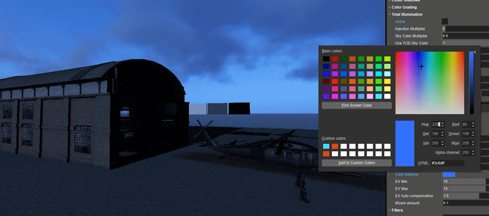
The same scene alternatively tinted yellow and blue
Although this setting is called "Color Balance," the brightness of it also determines the brightness of your whole scene. While Color Balance cannot brighten the scene, it can darken it down to complete blackness.
Using this setting as kind of global brightness setting is not a good strategy for creating dark scenes, as HDR is a post-processing effect performed after everything else is rendered. Dark scenes are best achieved through lighting, then using HDR to adapt exposure to various light levels.
Color vs. Tonal Contrast
Color moves the eye around the scene. It helps the eye separate objects by providing color contrast. The more you remove color contrast, the more you're going to need to provide tonal contrast to avoid a flat, muddy looking scene. They have a complementary relationship.
Be aware that if you set saturation of Color Balance to 100%, you have effectively replaced every color in your scene with one color. If you do want to use this setting, turning Saturation down to 0 will achieve better tonal contrast than leaving it at normal levels.
EV Auto compensation
EV Auto compensation affects the entire tonal range of your image. It's best to leave this at the default setting unless you want to create a highly stylized look like the one shown below.
Unlike Color Balance, you can use this setting to radically overexpose your image for those nuclear bomb detonation moments:
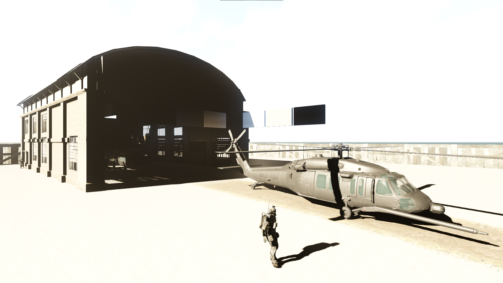
EV Auto Compensation maxed out
Seeing HDR at Default Settings
The image below demonstrates HDR exposure adaptation in action at the default values. When the camera is indoors, exposure brightens. Turning around to look back outside, as the camera moves from indoors to outdoors, the bright tones outside dominate more and more of the frame and the exposure gets progressively darker until eventually it's adjusted for outdoor lighting levels again.
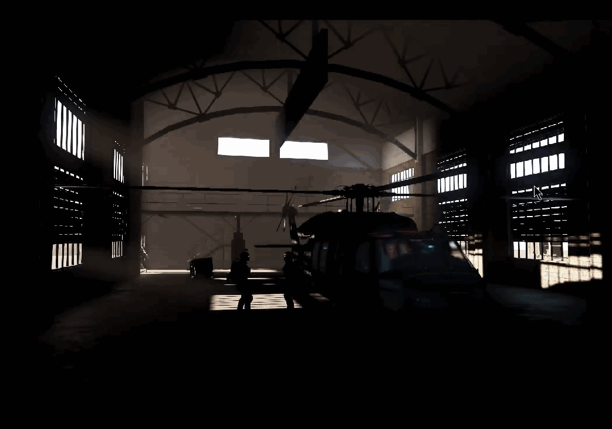
HDR adjusting
How much the exposure gets shifted is mostly determined by the average brightness of everything in the frame, or how much of the frame is dominated by dark or light tones.
As you can see, in situations that are only bright or only dark - i.e., just an indoor or outdoor view - all HDR has to do is set the correct exposure for one luminance level.
It's for the sake of high-contrast situations - when the camera sees both indoors and outdoors simultaneously - that HDR settings need to be fine-tuned to produce more realistic results.
HDR Adaptation Speed
You'll notice that by default, this exposure adjustment doesn't happen instantly, as making such dramatic exposure changes instantly would look very strange. The default speed is a couple of seconds just so it doesn't draw too much attention to itself, but you are free to set the speed as desired using the CVar R_HDREyeAdaptationSpeed.
The default is 2. this is not time, but speed. Increasing this can draw more attention to itself than you might want. When you have it the way you want it, add this CVar to your autoexec.cfg or .cryproject file, because there is no control over it in the Environment Editor.
EV Min and EV Max
The two most important settings that determine how much exposure compensation HDR will make are EV Min and EV Max.
"EV" stands for "exposure value." The EV scale was invented for photography, and essentially it's an indirect way of telling a camera how bright a scene is. EV tells a camera what combination of settings it can use to get a correct exposure for a scene of a specific brightness.
The higher the EV number, the brighter the scene. 10 is twice as bright as 9, which is twice as bright as 8, etc. In other words, it's a logarithmic scale.
Real-World Exposure Values
It's useful to have an idea what range of Exposure Values you'll find here on Earth. For example, on a bright sunny day, you'll get an EV of about 15. And EV 15 happens to be about 80,000 lux, and lux is the scale used by the Sun Intensity parameter. So you can plug that value into the environment editor's Variables → Sun → Sun intensity (lux) property if you want to model realistic Earth conditions.
Inside a building with the lights on, EV values average around 6. At night under a full moon, you'll get -3, or -6 under a quarter moon.
Key Concepts
Essentially, EV Min tells the HDR system how dark it should expect your dark scenes to be. That's used to help decide how much exposure compensation HDR is going to make for those dark scenes.
If you set EV Min to -3, that tells HDR to expect quite dark scenes (comparable to those lit only by moonlight). So you'll get a lot of brightening in dark scenes - the kind of brightening that would be needed to get a dark EV -3 scene to look normal. If you tell EV Min that your dark scenes are +6, (average indoor lighting levels), HDR is going to do a lot less brightening, because you've told it the scene is brighter and thus doesn't require as much brightening.
EV Max tells HDR how bright it should expect your bright scenes to be. Set EV Max to a very bright value of 18, and you'll get a lot of darkening - the kind of darkening you'd need to get a bright EV 18 scene to look normal.
In other words, HDR normalizes exposure using the values you provide in EV Min and EV Max and by looking at the tones that dominate the frame at any given moment.
You may have already realized the implications of these two settings: if you set these values differently than the actual brightness of your scenes, HDR will overexpose or underexpose your scenes. In other words, you can use these settings to achieve normal , under-, or over-exposure, as desired.
Seeing Exposure Values You Have
To see the EV (Exposure Values) you have in your game, enable r_HDRdebug 1. This will show you the average scene luminance expressed in three different commonly used units: cd/m2 (candela per square meter), lux, and EV. You can watch the EV of the scene change as the camera moves, and the auto-exposure system adjusting to the lighting conditions.
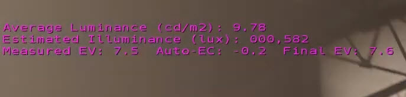
r_HDRdebug 1
HDR and Diffuse Light
As long as no ambient light is used, the renderer keeps shadows pure black, and HDR will never override that (in imaging terms, it will not shift the black point of the tonal range above black). Thus HDR is not a substitute for ambient light; it will not adjust absolute blacks.
In the majority of cases, you will want to utilize ambient light, so for the rest of this tutorial, SVOGI will be enabled and some environment probes will be added to provide diffuse and bounce light and specular reflections.
Practical Values for EV Min/Max
As you've already seen at the default HDR values (EV Min 4.5, EV Max 17) with real-world sunlight levels (Sun intensity at 80,000 lux), HDR's exposure compensation does not function well in high contrast situations. It overexposes highlights where dark scenes dominate:
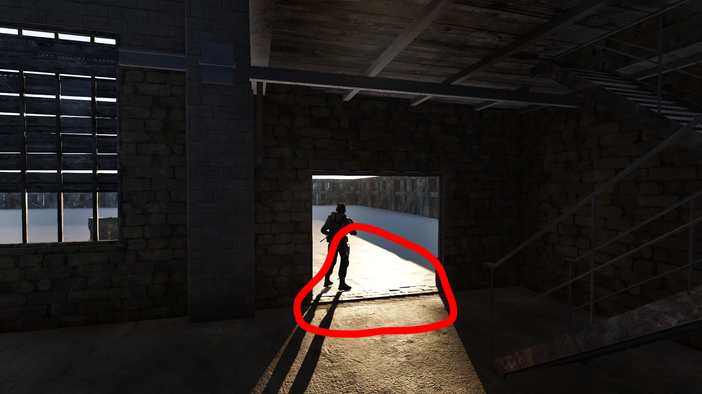
Highlights overexposed
and underexposes shadows where bright scenes dominate:
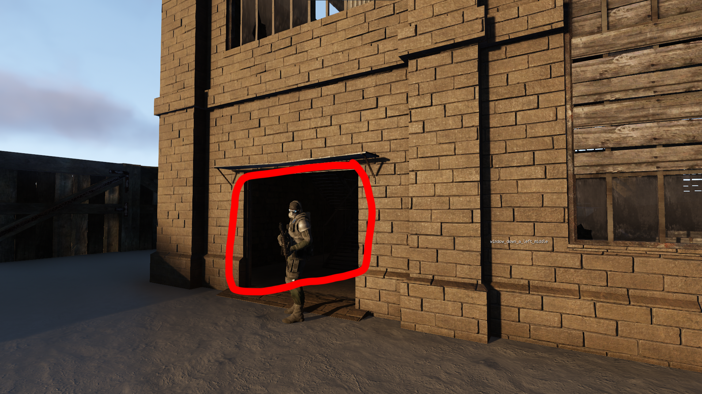
Shadows underexposed
Given that HDR's default goal is to normalize the exposure levels of every scene, it also tries to brighten dark interiors to normal exposure levels. The section of the hangar in the image below has no direct sunlight, just bounce and diffuse light, and is actually one of darkest scenes in this little level. True to its design, the default HDR settings (in the left image) have adjusted it to normal light levels for an EV 4.5 scene - not looking like a particularly dark scene, in this case. The image on the right has had the HDR EV Min and Max settings adjusted to preserve the dark quality of the scene more faithfully while still allowing the player to see. Note that your visual perception of images depends on context, so you will need to click on each of these images to hide the bright white background of this page in order for your eyes to adjust to the dark tones and see the images correctly.
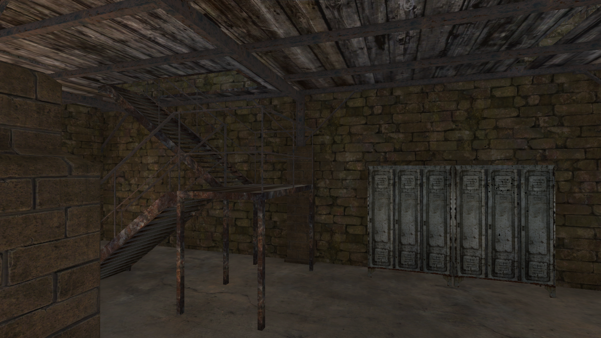 | 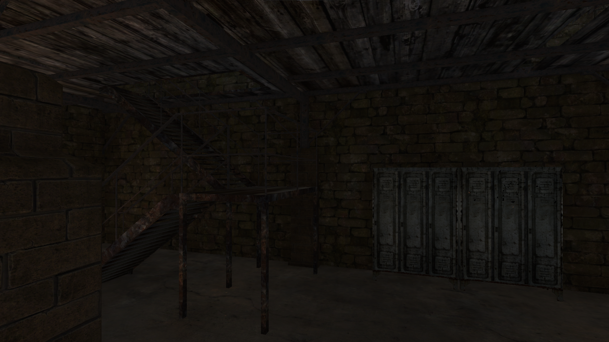 |
The reason is that the default EV Min setting of 4.5 is misinforming the engine that the dark scenes are darker than their actual brightness, thus that they're in need of more brightening than is appropriate.
Similarly, if the EV Max setting is higher than the actual average brightness of your bright scenes, they will be darkened more than is appropriate. While you could choose to do this deliberately to create a stylized high-contrast look, a different set of values are needed to balance dark and light areas in a more naturalistic way. In this photograph, outside the car is clearly brighter than inside the car, as expected, but the inside isn't so dark that you can't see details. Interior and exterior are balanced.
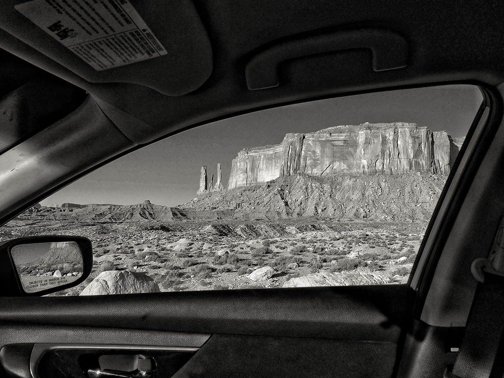
Interior and exterior balanced
Best Uses of HDR
It's essential to remember that like your eyes, this auto exposure HDR system has one simple goal: to make all scenes look normally exposed (according to the EV Min and EV Max values you've told it to expect).
While this approach works well to help humans in the real world see clearly and navigate safely, normalizing all scenes on a screen to the same exposure is not a very effective or creative way to use HDR. Essentially, you are negating the drama and contrast between dark and bright scenes that the lighting was meant to achieve in the first place.
In other words, we suggest using HDR in a way that mimics human vision enough to look realistic (provided that realism is the goal), but which departs from the goals of human vision ("normalize exposure for maximum safety") for the sake of dramatic lighting. The goals of game lighting design are to create visual moods while insuring navigability, not simply to provide utilitarian light levels.
The Human Visual Experience in High-Contrast Situations
During daylight hours, if you stand in the relative darkness inside a building and look outside through a window without getting too close to it, your eye will remain adapted for the dark interior, and the exterior will look "too bright" - physically painful, in fact. In imaging terms, it looks overexposed, as in the image below.
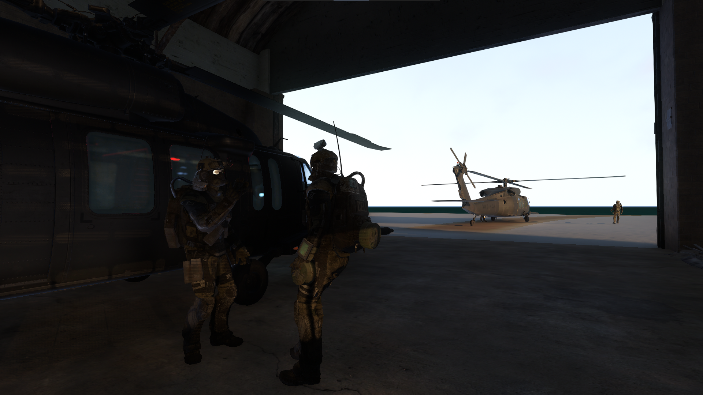
When standing indoors looking outside, outside looks bright
That's what you physically experience with your own eyes, so that's what's going to feel authentic to your players. The same goes for trying to peer indoors when you're standing outside at a distance from the window. The interior will look dark unless you shield your eyes from all outdoor lighting levels.
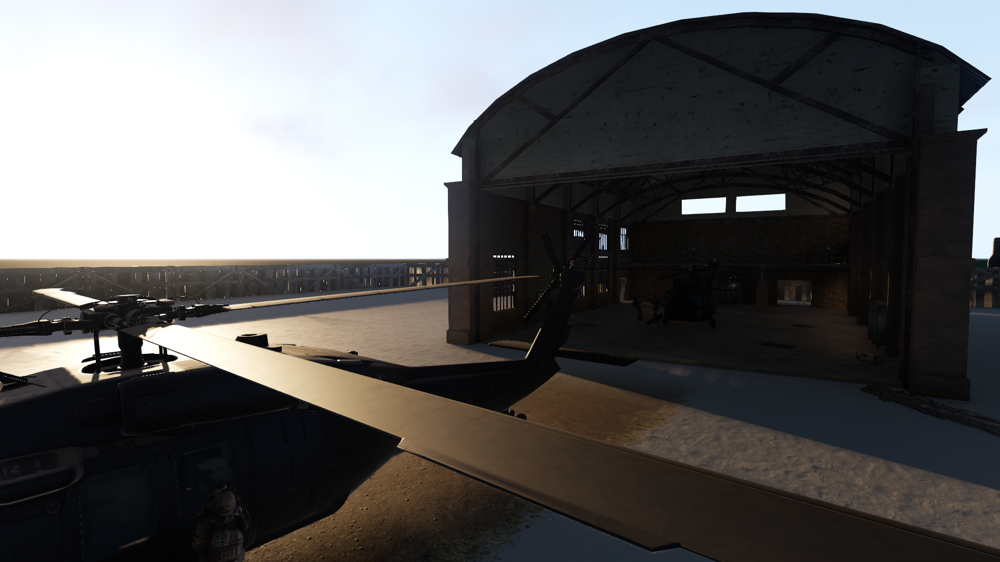
When standing outdoors looking inside, inside looks dark
If you brighten dark areas so they're normally exposed, they're not dark anymore. It's like the earlier example where we lit the interior with an electric light as bright as the sun.
Using HDR to Balance Interior and Exterior Light Levels
What we want to do is to balance interiors with exteriors by adjusting the ratio of luminance down to an acceptable but still dramatic range, given what's in the frame at any given moment - especially in high contrast situations (typically where you can see both inside and outside simultaneously).
For interiors, your goals are typically:
- Providing enough light so the player can navigate
- Preserving some of the ratio of brightness between interior and exterior light levels
- Creating a specific mood
- Allow darker interiors to still feel somewhat darker than exteriors - i.e., darker than normal exposure
- Preventing indoors sunlit highlights from uncomfortably overexposing
Essentially, we can meet those goals by setting EV Min to a much higher value than the actual average light levels of our interiors, and setting EV Max to a lower level than the actual average brightness of exteriors.
Essentially, we deliberately lie to the HDR system by telling it that the dark interiors are brighter than they really are. That prevents HDR from brightening interiors to the point where they're no longer dark (aka normalizing), which also helps avoid over-exposing any sunny highlights.
Similarly, by setting HDR Max to a lower-than-actual value, we prevent HDR from darkening exposure for the sake of exteriors so much that interiors get too dark.
Two other considerations: first, our eyes can discern subtle tonal differences more easily in bright areas than in dark areas. In general, this means you'll want to strive for a normal exposure in your bright exteriors in most cases, and let your dark scenes remain a bit darker than normal (rather than overexposing exterior scenes).
Secondly, we're more sensitive to overexposure than to underexposure; it "bothers" the eye more - another reason HDR is better used to keep bright scenes normal and dark scenes a bit dark rather than vice-versa.
Balancing Interior and Exterior Light Levels With EV Min and EV Max
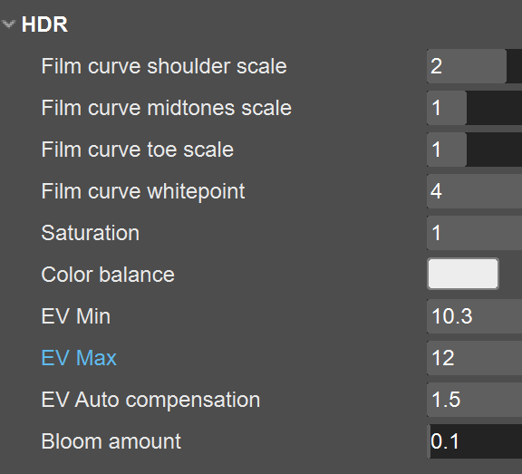
HDR parameters
Here are four views views of the same scene with Sun intensity (lux) set to 50,000 lux and HDR values as shown above:
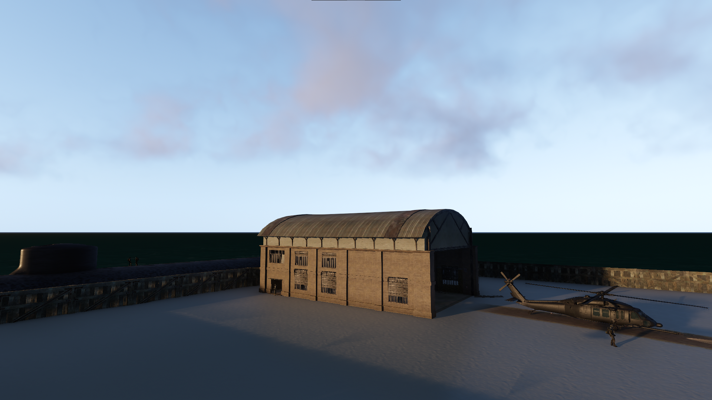 | 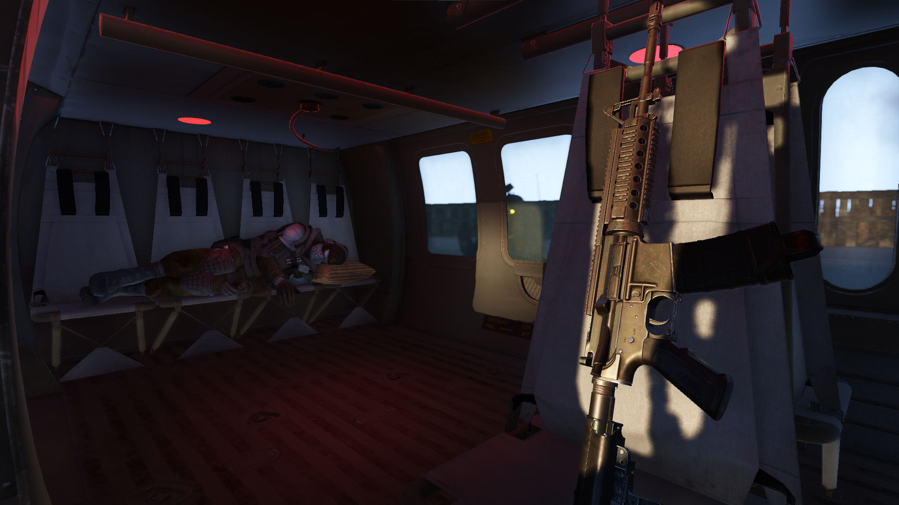 |
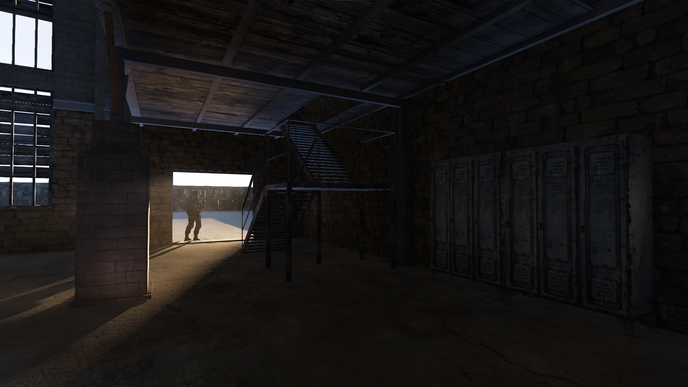 | 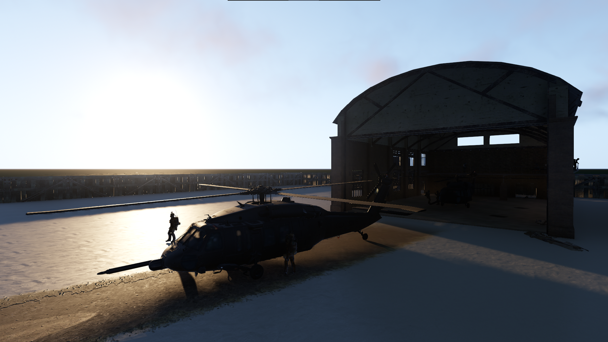 |
While this scene is far from finished, and would certainly be improved by fine tuning environment probes and SVOGI settings, interior and exterior light levels are better balanced. Dark interiors have retained their sense of darkness while still remaining bright enough to navigate. (Click on the images to enlarge them and prevent the white page background from skewing your perception of their tonal range.) Remember too that you scrutinize still images much differently than a player moving strategically through a game does.
HDR and the Rendering Pipeline
The HDR settings in the Environment Editor are strictly post-processing effects. The scene is already rendered into an image before HDR starts adjusting it. HDR only brightens and darkens the image that's already there; it doesn't trigger the whole render pipeline all over again.
The consequence of HDR's nature as a post-processing effect is that it can only work with the tones that have already been rendered, and in a 10-bit per channel color space (1024 colors per channel, or 1,073,741,824 possible colors). In other words, HDR in CRYENGINE cannot access tones that lay beyond pure black and white; it can only work with the image it's handed by the render pipeline.
Thus the best use of HDR is to make relatively subtle adjustments rather than using it to "re-light" your scenes. If HDR can't get you the image you want, adjust your lighting, then come back to HDR settings.
Disabling HDR
If you set EV Min and EV Max to the same value, you'll get no exposure adaptation whatsoever. Essentially the value you choose for both of them becomes a way to set a fixed exposure for all areas.
Tone Mapping Settings
While EV Min and Max perform pretty simple exposure compensation, you can fine tune HDR's effects through these tone mapping settings:
- Film Curve Midtones Scale mostly affects the brightness of tones around middle grey.
- Film Curve Toe Scale controls shadow tones as they approach black.
- Film Curve Shoulder Scale refers to highlight tones as they approach white.
While the word "curve" is appropriate, there is no curve editor in the CRYENGINE Sandbox, nor is there a histogram to show you the actual values in the engine. So the screenshots below show the Photoshop histogram and Curves tool modifying a screen capture of our scene, which is essentially what HDR does, even though you can't see the curve or histogram that it produces.
In the histogram (graph), the horizontal scale represents tones from black on the left to white on the right, and the vertical scale represents how much of each tone is present in the image (see below).
You can find curves in Photoshop under Image → Adjustments, or Layers → New Adjustment Layer → Curves.
Using Curves To Visualize Tone Mapping
When you first open Photoshop's curves tool, you'll see a straight line with only two control points: (1) at bottom left, how black the blacks are, and at the top right (2), how white the whites are.
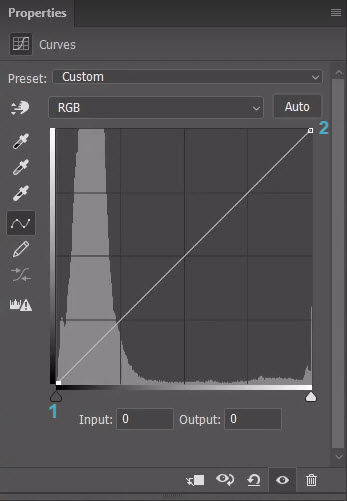
Photoshop Curve Editor tool
If you click on the black endpoint (1), you'll see that you have an input value of zero, which represents any pure black that is already in this image. The current output value is also zero. When input and output values for any given point are the same, no change has been made to the tones.
If you move the black endpoint to the right, you're taking shadow tones that were dark (but not black) and crushing them to pure black. If you lift the point straight up, you're mapping pure blacks to grey, and you no longer have any blacks.
Same thing with the white endpoint. (In an 8 bit image, 255 is the whitest white available). If you drag the point straight down, you're mapping what used to be pure white to grey. You'll no longer have any whites. Dragging it to the left discards highlight detail by clipping bright tones to pure white.
The term "mapping," specifically "tone mapping," simply means to move the brightness of tones around, to use different input and output values.
If the line is at a perfect 45 degree angle across the whole range, input and output values are the same, and nothing is changed.
Film Curve Whitepoint
The Film Curve Whitepoint setting works very much like moving the white endpoint mentioned in the Photoshop Curves tool. You can bring your brightest highlights down a bit (10) or throw away highlight detail by clipping highlight detail to pure white (.1). While this value isn't expressed in any real-world units, it's quite easy to see what it does.
This setting is most useful in dark night scenes, because our ability to distinguish between similar tones diminishes as we approach black. The darker it gets, the more everything just starts to look the same.
So it's very useful to expand the tonal range of dark scenes by shifting the Film Curve Whitepoint to the left. Essentially, that's brightening everything except the pure blacks, but the brightest tones are the most affected.
Only do this in dark scenes where you don't have anything close to white in the first place, because brightening your brightest tones, which means that any tones that were already bright will quickly become pure white. Also, remember that you don't necessarily need an absolute white in every scene, especially in dark scenes. The only place you should always see a pure white is within the disc of the sun when it's not too close to the horizon. (The sun itself is so bright that if you shifted your exposure so you could actually see detail on its surface, everything around it would be black.)
Film Curve Shoulder Scale Adjustments
HDR can darken or brighten bright tones as they approach white using the Film Curve Shoulder Scale. Visualizing it again using Photoshop's Curves tool, adjusting the engine's Film Curve Shoulder Scale is the rough equivalent of adding a point in the highlights on a Photoshop Curves adjustment and dragging it down to darken bright tones or up to lighten them. You'll also notice that we've finally produced a curve instead of a straight line:
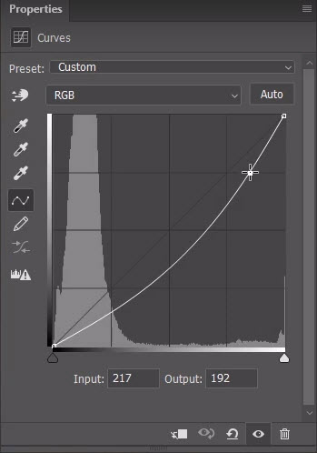
Photoshop Curve Editor - curve
And if you look at the input vs. output values, you'll see that as we're approaching white, the input values are getting lower in the output values. We're darkening the highlights without touching pure white.
Note one difference between the Curves tool in Photoshop and the Film Curve Shoulder Scale in CRYENGINE: while adding a point like this to a curve in Photoshop affects all tones except the white point and black point (unless you add additional points to maintain the same input and output values), the engine's Film Curve Shoulder Scale only affects the brightest tones - those brighter than those affected by Film Curve Midtones Scale.
Film Curve Toe Scale Adjustments
Just the opposite of Film Curve Shoulder Scale, Film Curve Toe Scale affects the darkest tones in the image - tones darker than those affected by Film Curve Midtones Scale. This is roughly the equivalent of using Photoshop's Curves tool to add a control point in the shadows, brightening them up as we approach black in this example:
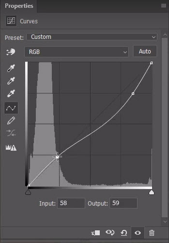
Photoshop Curve Editor - curve - s-shape
What we've done with these two new points is simply reduce the contrast of the scene. You'll also notice that the curve slightly resembles an inverted "S".
If we were to drag these points in the opposite direction into a normal "S" shape, we would be adding contrast to the scene. Highlights are brighter and shadows are darker.
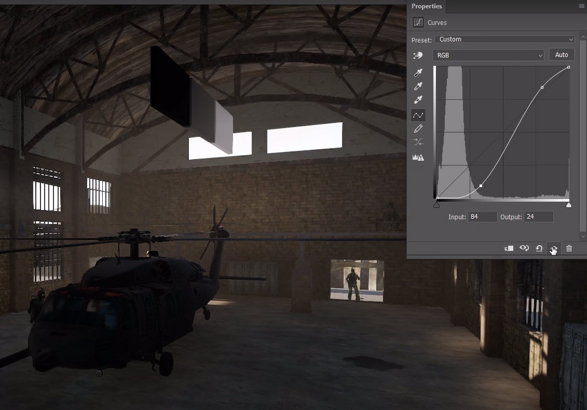
Contrast added to scene
These "S" curves presumably reminded someone of a lower leg, so the bottom part of the curve was dubbed the "toe" and the top part the "knee" or the "shoulder," terms that you'll see used throughout the imaging industry.
Film Curve Midtones Scale Adjustments
Finally, Film Curve Midtones Scale is roughly the equivalent of adjusting a point in the middle of the tonal scale, while not touching highlights and shadows.
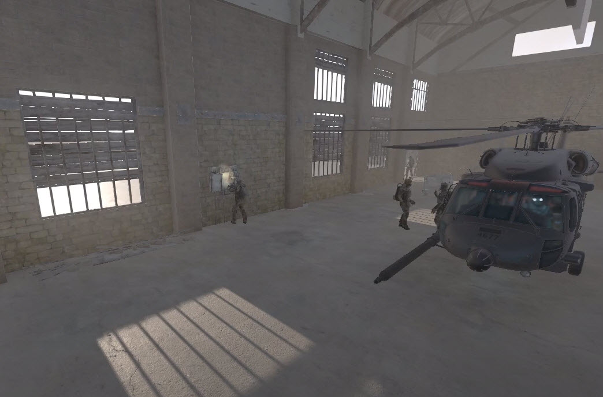
Image degraded by strong change in Midtones Scale
Bloom amount
Last but not least, you'll notice this bloom effect around high contrast edges like these window frames, which is the light spreading into the shadows when it breaks around dark geometry edges.
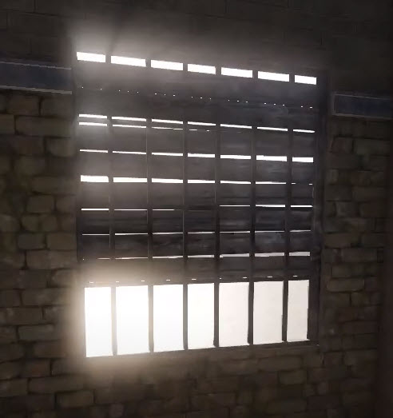
Bloom effect
While this is a real phenomenon produced by looking at the world through lenses, including the lenses in our eyes, the default Bloom value is already a fairly dramatic effect, so you might want to adjust it downward.
Filters
The filters are also post-processing effects, and relatively simple. They do incur some performance cost, so take that into account when you use them.
Grain
Grain is noise that digitally imitates (monochrome) physical film grain or digital noise.
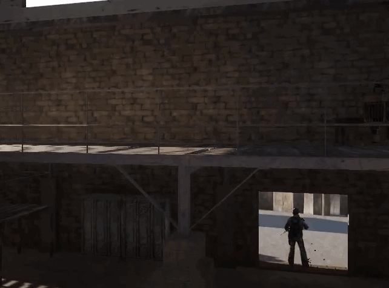
Grain
You can't control the size, movement, or anything except the intensity.
Photofilter Color/Density
To see the effect of a Photofilter color, you have to raise the Photofilter density above zero. Photofilter color is a much more subtle color tint effect than HDR color balance, in both its effect on luminosity and on color. For instance, if you just choose a middle grey Photofilter, all you're effectively doing is desaturating everything a bit. And if you push the brightness up or down very far, you'll clip your highlights or shadows in a very unpleasant way, whereas the HDR color balance does a much more sophisticated job of maintaining tonal relationships. But you can certainly use this to add subtle color tints if you like.
Note that you can toggle the current Photofilter effect on and off at the Console with r_ColorGradingFilters 1 or 0, respectively.
Video Tutorial
This tutorial is also available in video form on our YouTube channel: